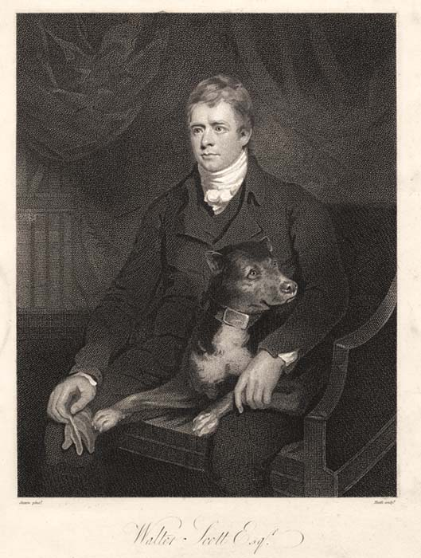

<< Back

Sir Walter Scott, engraved by
James Heath
after
James Saxon
(1810)
This engraving was first published as the frontispiece to the second impression of Scott's
The Lady of the Lake
(Edinburgh: John Ballantyne and Co., 1810).